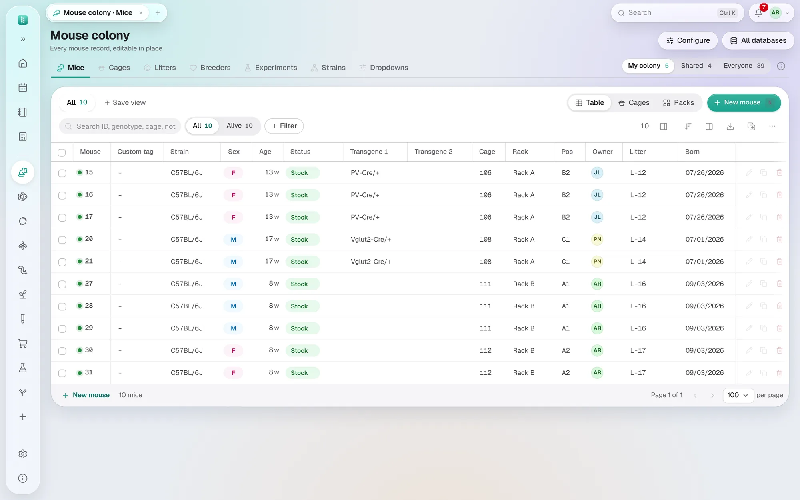
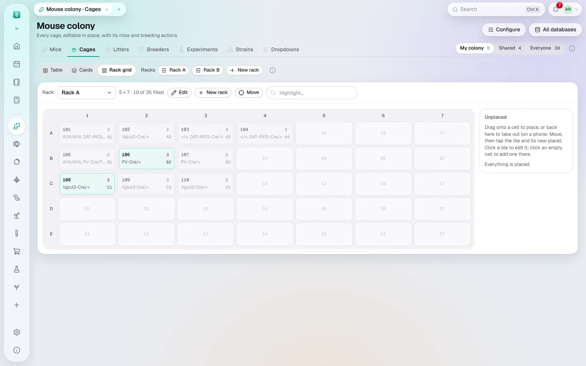

数据库
小鼠鼠群
小鼠、笼、产仔和繁殖，从出生到断奶分笼。
它对你每周的工作意味着什么
鼠群运转靠的是一堆容易记错、又很烦人的日期：一窝什么时候够大可以鉴定基因型、什么时候必须断奶、哪个笼快挤了、 这些小鼠是谁的。BioManager 要做的，就是从你本来就知道的那一件事——出生那天——把这些日期都算出来， 并摆到当班的人面前。
| 产仔 | 日期只记一次（记录产仔）。基因型鉴定和断奶日期据此算出， 出现在首页和日历上——两处是同一份列表，谁也不用再自己记一本。 |
|---|---|
| 够大可以做基因型鉴定了 | 几下点击就把一窝变成每只一条记录 （鉴定一窝的基因型），各自带耳标和结果，而不是让你重新敲一遍表格。 |
| 断奶那天 | 断奶分笼按性别把幼鼠分进新笼，仍然关联着它们来自的那一窝， 并腾空配种笼。新笼的笼卡打印出来时，基因型已经印在上面 （打印笼卡）。 |
| 在动物房里 | 用手机扫笼卡上的二维码就能打开那个笼，戴着手套也能记体重或写一句备注， 走出房间前就已经进了记录（在实验台）。 |
你不用再做的事：把断奶日期记在脑子里或墙上的挂历、把一窝重新敲进表格、断奶后手写笼卡， 以及追问某个笼里的小鼠是谁的——每条记录都写着负责人，也写着谁可以改它。
顶部的标签页：小鼠 （Mice）、笼 （Cages）、窝 （Litters）、种鼠 （Breeders）、实验 （Experiments）、品系 （Strains）和 下拉选项 （Dropdowns）。我的鼠群 / 我的项目组 / 共享 / 全实验室 （My colony / My groups / Shared / Everyone）开关改变的是你看到什么，而不是你能 编辑什么：我的鼠群是你自己的加上你参与的共享笼，我的项目组是你所在项目组的， 共享只显示共享笼，全实验室显示所有笼。笼列表上方的 全部 （All）、在用 （Active，有活鼠的笼）和每种用途各一个的按钮， 只显示那类笼。用途按钮只列出还有活鼠的笼，过去的笼不会挤在里面；要看它们，点 全部。

笼架和笼
笼 → 笼架视图 → 新建笼架 （Cages → Rack grid → New rack）：设置行数、列数和位置编号方式——D7、4-7、
7D 或 1 到 80，和实物笼架上的贴纸一样。没有位置的笼会留在未放置（Unplaced）里；把它们拖
上去。没有活鼠的空笼不列在那里，表格里仍能看到。每个笼都有用途、负责人、房间和笼里的小鼠。用途有：
- 配种笼 （Breeding）：正在交配的笼。只有配种笼有 产仔 （Litter born）、基因型鉴定 （Genotyping） 和 断奶 （Wean）。
- 种鼠笼 （Breeder）：实验室的种鼠，留着用来繁殖的小鼠。每个人负责维护其中一部分，所以种鼠笼默认与实验室共享， 除非负责人改为个人；种鼠 （Breeders）标签页列出这些笼。
- 实验笼 （Experiment）：用于实验的小鼠。
管理员可以在 配置 → 笼的用途 （Configure → Cage purposes）里修改这份列表（也可以在 下拉选项 （Dropdowns）标签页改，是同一份）， 在那里加的每个用途都会在笼列表上方多一个按钮。笼里有活鼠时才算 在用 （Active）。选中笼可以设置用途或负责人、移动， 或把空笼 退役 （Retire）：退役的笼会移出鼠架，并清除用途。
笼有三种显示方式。表格 （Table）：每笼一行，小鼠列在下面（可直接编辑），还有操作按钮； 产仔（Litter born）和断奶到期（Wean due）紧跟在小鼠后面，什么时候该断奶一目了然。直接改写笼号就能 重新编号（小鼠跟着走；与其他笼重号会被拒绝）。笼号后面的笼卡编号（Card ID）是动物房自己笼卡上的编号（如果有）。 笼里小鼠显示的转基因列与 小鼠 （Mice）标签页一致：在那里的 列 （Columns）里显示或隐藏转基因 3、4， 笼这边也跟着变。全部收起 （Close all）把每个笼折叠成一行（页面会记住），全部展开 （Open all）再展开；行首的箭头 或小鼠数量可以单独展开或收起一个笼。卡片 （Cards）：每笼一张卡片——位置、用途、负责人、品系、断奶时间、笼里的小鼠和同样的 操作——有自己的搜索框和同样的筛选按钮，默认显示在用（Active）。笼架视图 （Rack grid）：从正面看笼架。页面 会记住你上次用的方式。

一个位置上有两个笼。 新笼常常在原来那个笼结束之前就放进了同一个位置，所以一个位置上可以有不止一个笼。 在笼的表单、表格、导入或助手的提议里把笼放到有笼的位置，都会照常放进去，并说明那里已经有哪个有活鼠的笼。 笼架视图显示最后放进去的那个笼（有活鼠的优先于空笼）；那里有两个或更多有活鼠的笼时，位置上标一个 !。 把鼠标移到 ! 上或点一下，会列出这个位置上的所有笼，点其中一个就能打开它、移走或结束它。空笼和已结束的笼不算。 把笼拖到一个位置上，仍然是和那里显示的笼交换。
修改笼架的布局。 笼的位置记的是第几行、第几列，位置的名称由笼架的布局决定。所以修改行数、列数或位置的编号方式
（在笼架视图上点 编辑 （Edit））时，笼即使没有被移动，位置名称也可能变：把字母和数字对调，原来在 F7
的笼会显示成 G6。保存这样的修改之前，BioManager 会列出受影响的每个笼，以及它现在的位置和每种选择之后的位置，并问你：
- 保留各自的位置名称 （Keep each position name，编号方式改变时默认选这个）：
F7仍是 F7，移到现在叫 F7 的格子。 - 各自留在原来的格子 （Keep each in the same cell）：笼留在原来的行和列，位置名称随之改变。
新布局里没有它的名称或格子的笼（笼架变小时）会留在笼架上但没有位置，出现在未放置（Unplaced）里；对话框会数出这些笼， 以及会放有不止一个有活鼠的笼的位置。点 取消 （Cancel）就什么都不保存。只改笼架的名称或把笼架变大，不会询问。 修改和移动是同一批操作，可以在 批量操作记录 （Batch history）里一起撤销。鱼缸架、果蝇和线虫的架子、库存冻存盒和质粒盒也一样会询问。
小鼠
- 新建小鼠 （New mouse）添加一只，批量添加 （Add many）添加一批新的（或载入用 下载模板 （Download a template）做的 CSV），从 Excel 导入 （Import from Excel）用于你已有的表格（方法）。在批量添加里，笼号填
new就把这一批放进一个新笼；同时有雌雄时，雌雄各进一个新笼，除非勾选雌雄放在 同一个新笼（Keep both sexes in one new cage）。在预览里，new-2、new-3……表示更多的新笼，如果某个新笼 会同时有雌雄，会特别指出。 - 每只小鼠有 自定义标识 （Custom tag）、品系、性别、出生日期（年龄以周显示）、状态——breeder、experiment、geno、transfer、sac（繁殖、实验、待鉴定、转出、处死）——最多四个 转基因、基因型、笼、窝、负责人和备注。出生日期不能是未来的日期。
- BioManager 给小鼠的编号就是它的身份：按顺序分配、从不重复使用，它的样本、笼卡和实验都按这个编号关联。 旁边的 自定义标识 则是动物身上的标记——耳标号、耳孔位置（如 RF、LB）、尾部文身，或你们实验室自己的标记方式。 两只小鼠可以有同样的标记，搜索也能按它找到小鼠；导入时，表格里名为 custom tag、ear tag、notch、 tattoo 或 tail tattoo 的列会进入这一列。把鼠标停在小鼠编号上也会显示它。如果你们不给小鼠做标记， 在 列 （Columns）里取消勾选 自定义标识 就能隐藏这一列。
- 自定义标识后面的 品系 （Strain）是小鼠的遗传背景：输入时会列出 C57BL/6J、BALB/cJ、129S1/SvImJ、 FVB/NJ 等多数实验室常用的品系，也可以输入你们自己的。在鼠群的 下拉选项 （Dropdowns）标签页里修改这个列表 （列选 strain）。批量添加 （Add many）可以给整批小鼠设同一个品系，搜索也能按它找到小鼠；导入时，表格里名为 strain、background 或 品系 的列会进入这一列。
- 选中小鼠可以设置字段（负责人、状态、品系、性别、转基因、笼、窝、出生日期、死亡日期、备注，或你们自己加的列）、加入实验 （Add to experiment）或 处死 （Sac）。 出生日期属于窝：选中一窝的全部小鼠时，改的是这窝本身的日期；只选了一窝中的几只，它们会一起移到一个新窝，日期为所填的日期。 设为 sac 或填写死亡日期就结束这条记录；它会留在历史里。
繁殖：从产仔到断奶
配种时，把种鼠放进用途为 配种笼 （Breeding）的笼。在 笼 （Cages）标签页展开它（点箭头或小鼠数量），或在 卡片 （Cards）里找到它：产仔 （Litter born）、基因型鉴定 （Genotyping）和 断奶 （Wean）按钮都在那里，并且只出现在配种笼上。创建窝 （Create litter）按 L-1、L-2、L-3…… 给每一窝编号（也可以自己输入 ID）。
- 产仔 会询问出生日期（默认今天，可修改；未来的日期会被拒绝），并记录 这次生产。BioManager 自动算出断奶日（P21）和基因型鉴定日（P28），或在 设置 → 一般 里设定的天数，到期时会出现在首页和日历上——两处是同一份列表。一个笼可以同时有两窝 （三只一笼时的第二只母鼠）：笼里还有一窝没断奶时，产仔 会问这是 另一窝 （Another litter），和第一窝一起保留、 各有各的日期，还是 更正日期 （Correct the date）。之后笼上会列出每一窝和它的日龄，首页和日历也分别显示每一窝和它的出生日。
- 基因型鉴定 会询问父本和母本的小鼠编号，以及生了几只仔鼠；创建窝 （Create litter）建立这一窝，并为每只仔鼠 建一条小鼠记录，状态设为 geno。它们会留在首页的基因型鉴定队列里，直到你把它们的 状态 （Status）从 geno 改掉；只录入基因型并不会让它们离开队列。笼里有两窝时，它会问是哪一窝的仔鼠，默认还没鉴定的最早那一窝。
- 断奶 会打开断奶并分笼（Wean and distribute pups），已经填好这个笼的仔鼠，雌雄分行：断奶并移动 （Wean and move）把每一行送到新笼或已有的笼，或者 标记已断奶，稍后再移动幼崽 （Mark weaned, move pups later）。无论哪种，这一窝 都会标为已断奶，并从首页和日历上消失。小于 P18 的仔鼠需要你确认后才能断奶。笼里有两窝时，它会问给哪一窝断奶， 默认最早的那窝；另一窝留着，有它自己的断奶日。
种鼠 （Breeders）列出种鼠笼，也就是实验室的种鼠：笼架和位置、雌雄各几只。上方按基因型统计种鼠笼和配种笼里的种鼠， 并标出超过 30 周的种鼠。领用 （Pick）把一只种鼠转到你名下，用来配种；原负责人会收到通知。空置超过 90 天的种鼠笼， 以及笼里 90 天前就已结束的小鼠，不会列出；顶部的 显示它们 （Show them）会把它们也列出来。
实验、品系、下拉选项
- 实验 （Experiments）把小鼠组成一个队列，分成处理组，记录每天对它们做了什么，以及体重： 见实验：适用于所有动物。（实验记录本里的实验是实验记录；这里的是 动物。）
- 品系 （Strains）是实验室的品系和等位基因参考列表。
- 下拉选项 （Dropdowns）保存每列可选的选项，让全实验室用同样的词。所有人都能看到；只有管理员 能修改。